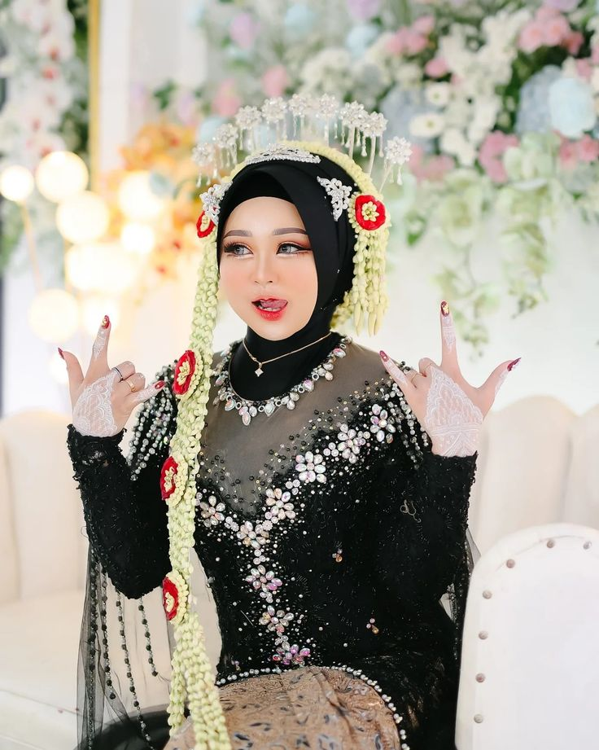

Raka Pratama
Putri pertama dari
Bapak Ahmad dan Ibu Siti
Pernikahan
Minggu, 20 Desember 2026
Kepada Yth. Bapak/Ibu/Saudara/i
Tamu Undangan
Sugeng Rawuh
Kalih manah, setunggal lampah, tansah rahayu.
Minggu, 20 Desember 2026
Jelajahi UndanganAssalamualaikum warahmatullahi wabarakatuh. Kanthi memuji asmaning Gusti ingkang Maha Asih, kami bermaksud menyelenggarakan pernikahan putra-putri kami. Merupakan kebahagiaan bagi kami apabila Bapak/Ibu/Saudara/i berkenan hadir dan memberikan doa restu.
وَمِنْ آيَاتِهِ أَنْ خَلَقَ لَكُم مِّنْ أَنْفُسِكُمْ أَزْوَاجًا
QS. Ar-Rum: 21
Putri pertama dari
Bapak Ahmad dan Ibu Siti

Putra pertama dari
Bapak Budi dan Ibu Rina
Kami bertemu pertama kali di sebuah acara kampus. Obrolan singkat tentang hal-hal sederhana ternyata terasa hangat dan mengalir begitu saja. Dari situ, kami mulai saling menyapa, bertukar cerita, dan diam-diam menantikan pertemuan berikutnya. Witing tresno jalaran saka kulina, cinta tumbuh karena terbiasa bersama.
Dua tahun berjalan, kami belajar memahami satu sama lain: kebiasaan, impian, juga kekurangan. Ada jarak, kesibukan, dan perbedaan pendapat yang kami lewati bersama dengan sabar. Di masa ini, kami yakin bahwa kami ingin saling menjaga dan melangkah ke arah yang sama. Keluarga kedua belah pihak pun mulai saling mengenal dan menyambut dengan hangat.
Dengan restu kedua orang tua, kami memantapkan hati untuk membangun rumah tangga. Lamaran berlangsung sederhana namun penuh doa, dan kini kami siap memasuki babak baru. Kami memohon doa restu Bapak/Ibu/Saudara/i agar pernikahan ini berjalan lancar dan menjadi keluarga yang sakinah, mawaddah, warahmah.
Minggu, 20 Desember 2026
08.00–10.00 WIB
Jl. Rungkut Asri Utara I No.4, Kali Rungkut, Kec. Rungkut, Surabaya, Jawa Timur 60132
Lihat LokasiMinggu, 20 Desember 2026
11.00–14.00 WIB
Jl. Jawar Surabaya, Benowo, Kec. Pakal, Surabaya, Jawa Timur 60196
Lihat LokasiMandi air kembang tujuh rupa, simbol membersihkan lahir dan batin.
Malam sebelum akad, dipercaya para bidadari turun memberi restu.
Pertemuan pengantin dengan balangan gantal dan injak telur.
Sujud kepada orang tua sebagai tanda bakti dan permohonan doa.
Kehadiran Anda akan menjadi kebahagiaan bagi kami. Mohon konfirmasi kehadiran melalui formulir berikut.
Versi demo: data hanya tersimpan di browser yang digunakan.
Setiap doa dan ucapan baik dari Anda menjadi bagian indah dari awal perjalanan hidup kami.
Doa restu Anda merupakan hadiah terindah bagi kami. Apabila ingin berbagi tanda kasih, berikut informasi rekening yang dapat digunakan.
Bank BRI
Muhammad Baried Isom Husnudin